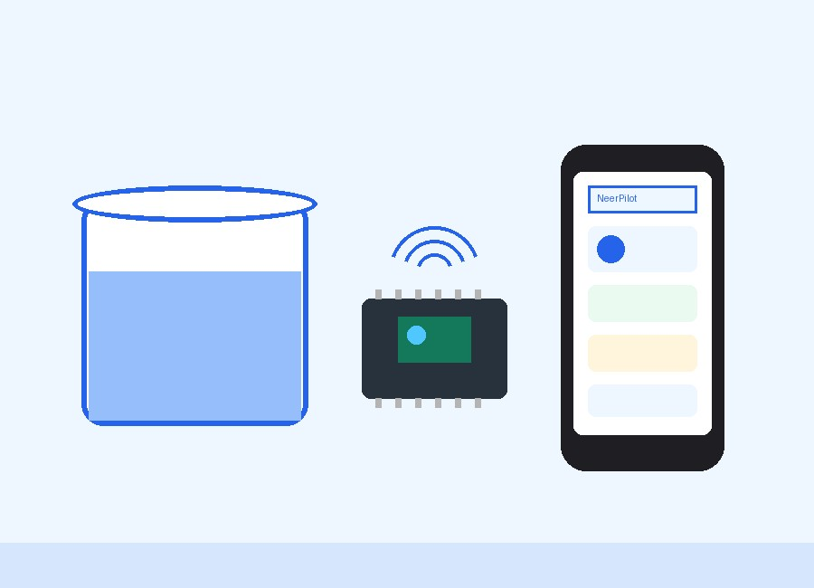
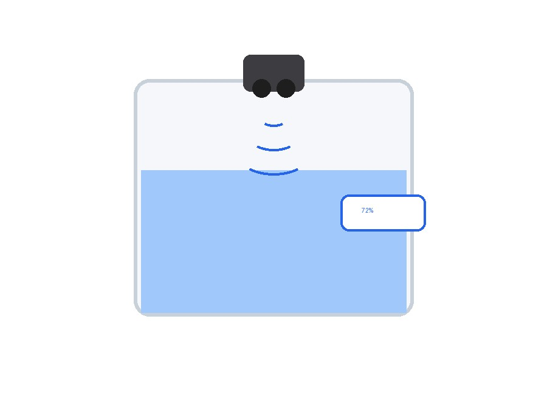
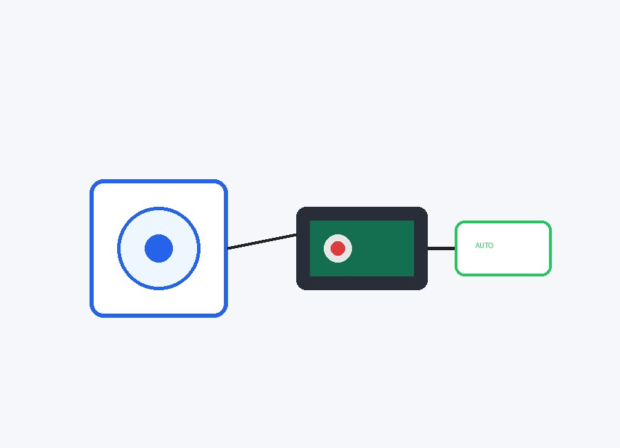
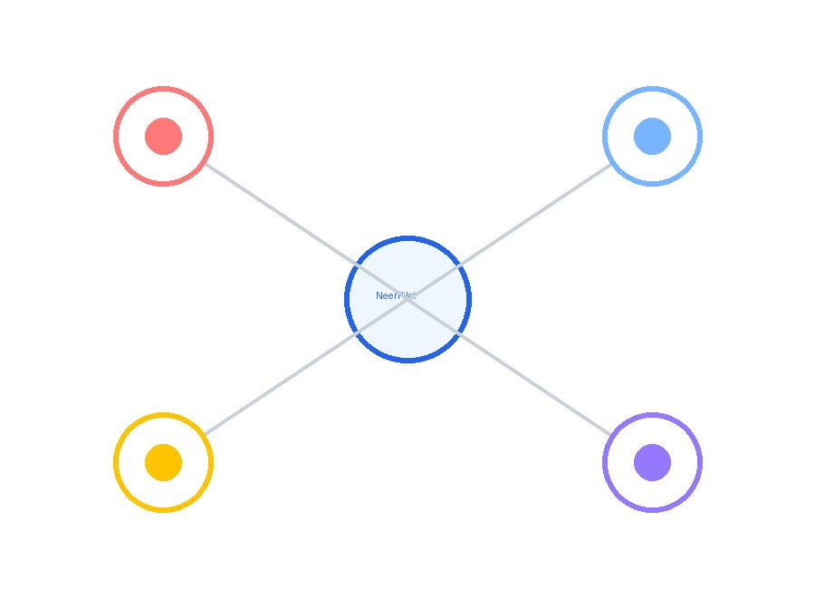
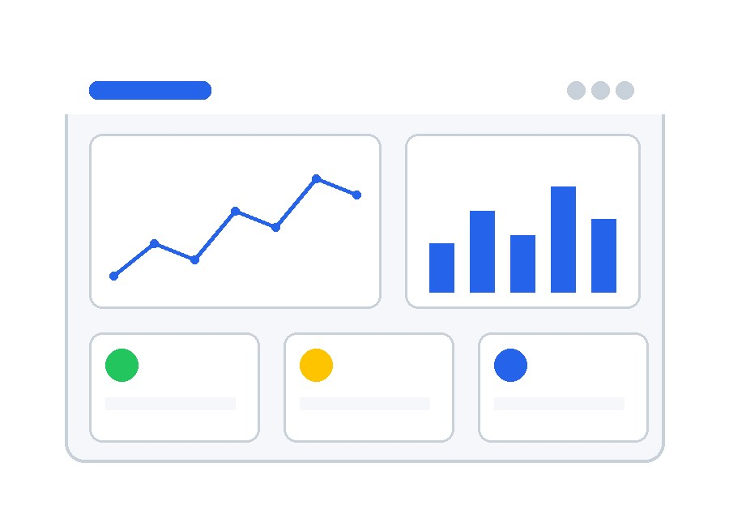
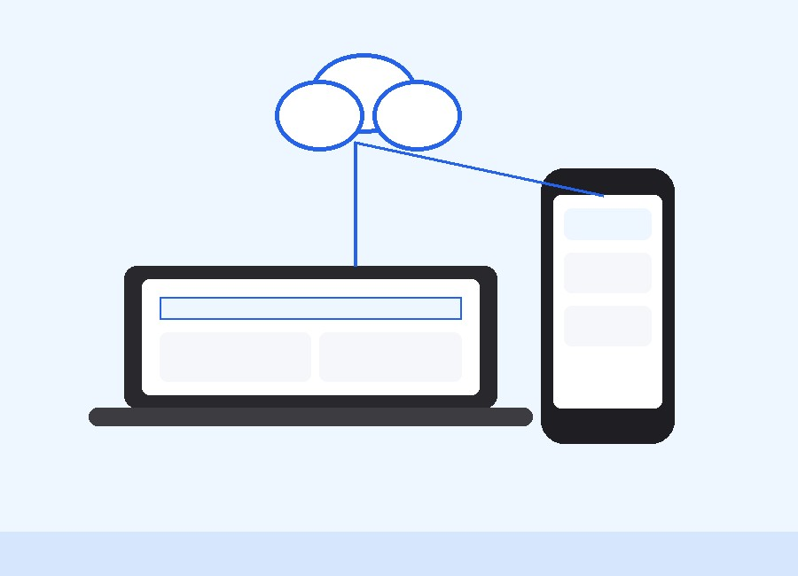
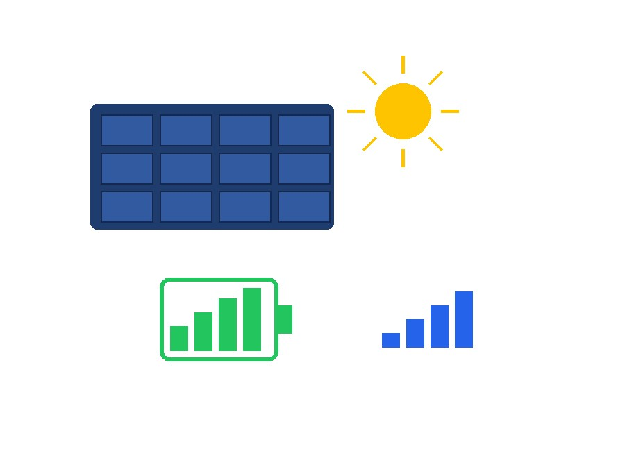
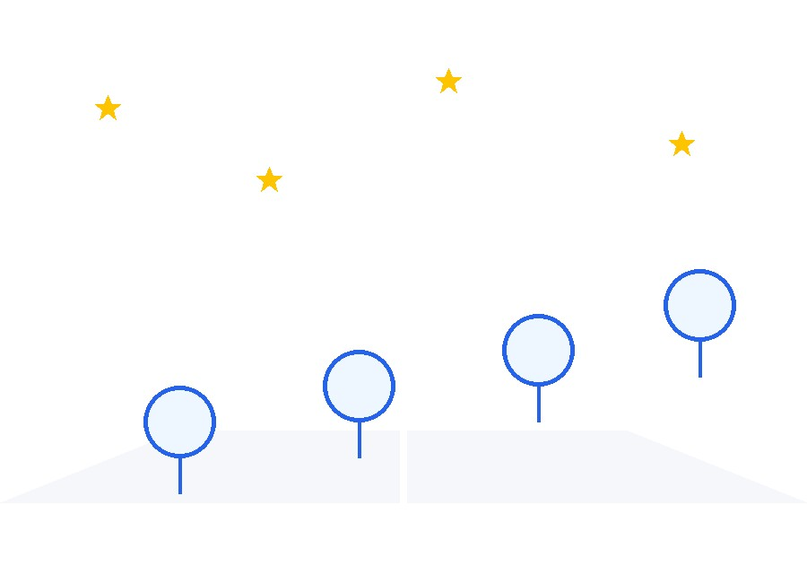

One Platform for Complete Water Management
NeerPilot gives you complete smart monitoring of water tanks, motors, electricity, battery and IoT sensors — all from a single, real-time dashboard you can access from anywhere.

Smart Tank Monitoring
NeerPilot uses precision ultrasonic sensors to measure the exact water level inside your tank, converting raw distance readings into a clear percentage of tank capacity. No more guessing how full your tank is — every reading updates in real time on your dashboard, so you always know exactly how much water you have on hand.
Whether your tank is big or small, round or rectangular, NeerPilot calibrates to your tank's true capacity, giving you accurate, reliable readings around the clock.
Water Level
Precise, real-time level readings for every tank.
Ultrasonic
Non-contact sensing for accurate, long-term reliability.
Capacity
Calibrated to your tank's exact shape and size.
Live Monitoring
Continuous updates streamed straight to your dashboard.


Automatic Motor Control
NeerPilot takes the guesswork out of running your motor. Switch to Auto Mode and let the system start and stop your pump exactly when needed — filling the tank without ever letting it overflow, and shutting off the motor the instant the tank runs dry to protect it from damage.
Prefer to stay in control? Manual Mode lets you operate the motor yourself from anywhere, while NeerPilot still watches in the background for overflow and dry-run conditions.
- ✔ Auto Mode fills tanks without supervision
- ✔ Manual Mode gives you full remote control
- ✔ Overflow prevention stops waste before it happens
- ✔ Dry-tank prevention protects your motor
- ✔ Relay control switches the pump safely and instantly
Smart Home Integration
NeerPilot isn't just a water monitor — it's a connected hub for your home's essentials. Control relays, RGB status LEDs, an OLED display and buzzer alerts remotely, all from the same dashboard you use to check your tank. As your setup grows, NeerPilot is built to welcome future smart devices into the same ecosystem.
Relay Control
Switch connected appliances remotely and safely.
RGB LEDs
At-a-glance status indicators for your whole system.
OLED Display
Local, on-device readouts for quick status checks.
Buzzer Alerts
Audible warnings for overflow, shortage and faults.

Live Dashboard
Every sensor, every motor, every alert — brought together in one clean, easy-to-read dashboard. Track live readings, dig into historical trends, and keep an eye on the health of every connected device, all from a single screen.
Real-Time Monitoring
Live readings updated continuously, with zero delay.
Historical Data
Track trends over days, weeks and months.
Device Status
Instantly see which devices are online or offline.
Sensor Analytics
Deeper insights into usage patterns and efficiency.


Monitor From Anywhere
Your tank doesn't stop needing attention just because you're not home — and neither does NeerPilot. Check your water levels, motor status and device health from your phone, laptop or tablet, wherever you are. Powered by secure cloud connectivity, NeerPilot keeps you informed with live updates and instant notifications the moment something needs your attention.
- ✔ Full mobile access from anywhere
- ✔ Laptop and desktop dashboard support
- ✔ Secure, always-on cloud connectivity
- ✔ Remote monitoring with no distance limit
- ✔ Live updates the moment something changes
- ✔ Instant notifications for critical events
Reliable Hardware
NeerPilot is engineered to keep working, no matter what. Battery backup and solar charging keep the system running through power cuts, while continuous signal and connectivity checks make sure you're never left in the dark about your system's health.
Battery Backup
Keeps monitoring active through power outages.
Solar Charging
Sustainable, low-maintenance power for remote setups.
Signal Strength
Constant connectivity checks for a stable link.
Offline Detection
Know immediately if a device drops off the network.
Stable Communication
Reliable data transfer between hardware and cloud.
Built to Endure
Designed for long-term, real-world reliability.

Instant Smart Alerts
NeerPilot watches your system so you don't have to. The moment something needs attention — an overflowing tank, a battery running low, or a motor running longer than it should — you get notified instantly, wherever you are.
Why Choose NeerPilot
A complete, reliable and future-ready platform built for real homes, real farms and real businesses.
Real-Time Monitoring
Always-on visibility into your water system.
IoT Enabled
Connected sensors and devices working as one system.
Water Saving
Prevents overflow and eliminates silent wastage.
Energy Efficient
Cuts unnecessary motor runtime and power use.
Remote Control
Manage everything from anywhere, anytime.
Easy Installation
Simple setup that fits any existing tank system.
Future Ready Platform
NeerPilot is designed to grow. Today it monitors and controls your water system in real time — tomorrow, it will predict usage, detect leaks before they become problems, and respond to your voice, all while supporting multiple tanks and a fully connected smart home.
AI Water Prediction
Forecast usage patterns before they happen.
Leak Detection
Catch hidden leaks before they waste water.
Consumption Analytics
Understand exactly where your water goes.
Voice Assistant
Check status and control devices hands-free.
Multi-Tank Support
Monitor multiple tanks from one dashboard.
Smart Home Integration
One ecosystem for water and connected devices.

Ready to Save Every Drop?
Join homes, farms and businesses already using NeerPilot to monitor, protect and control their water systems in real time. Start today and never worry about overflow, shortage or wasted electricity again.